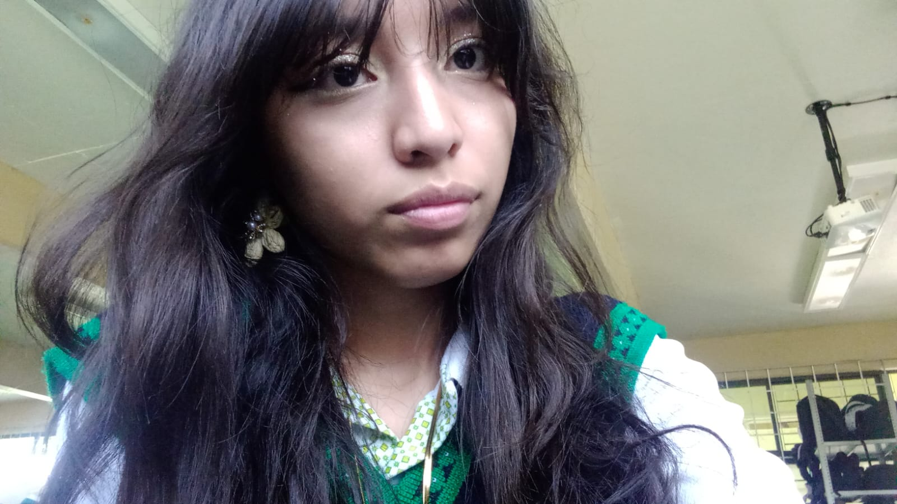

Nací en el estado de México, siendo la tercera hermana de cuatro
Crecí en una familia con mis tres hermanos, mi mamá y mi abuela
De pequeña era una niña muy tranquila. Era muy callada y pocas veces cause problemas.
Siempre me gusto mucho leer, pues de pequeña desarrolle un gusto por la literatura una vez que aprendí a escribir. Y se convirtió en una de las cosas que más me gustan. En la escuela fui responsable y me interesaba por toda las materias, así que pocas veces no me gusto una.
Desde siempre he preferido los lugares menos habitados y silenciosos, por lo tanto mi circulo social ha sido pequeño.
Al entrar a la preparatoria entre al Cecytem en la carrera de programación. Al principio no sabía de que trataba la carrera,
pero con el paso del tiempo me
fue gustando y es algo que quizá estudiaré en un futuro. En esta misma escuela conocí a los que hoy son mis amigos.
Una de ellas es Regina con la cual me case hace no mucho tiempo y nuestra relación es muy buena actualmente.Actualemnte tengo 17 años y estoy por terminar la preparatoria. Auntengo planes a futuro y me sigue gustando el mundo de los libros y la escritura.